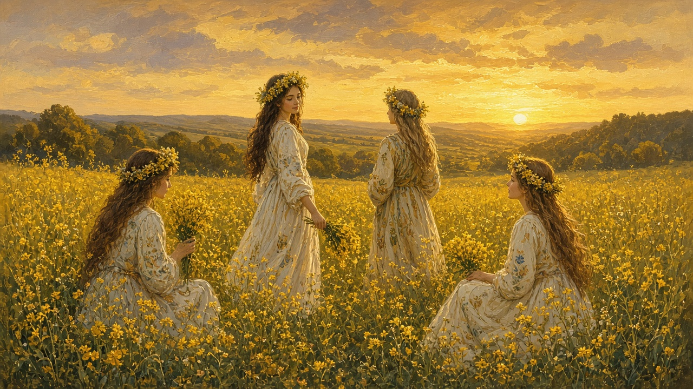

Sânziene
June 24. Yellow flowers in a crown, a night villages remember differently, and the church keeping the birth of John the Baptist on the same date. Folk and feast at once.

Midsummer, and a saint
The longest light sits around this day. Work is outside. Tomatoes are worth eating. The year already named the hinge: Midsummer herbs, yellow flowers. The church keeps Nașterea Sfântului Ioan Botezătorul — the Nativity of John the Baptist — on the same civil date most parishes use. Some houses go to liturgy. Some pick what is blooming in the ditch. Some do both. This is not one script, and it is not a tourist night with a ticket. In the south, some yards still say Drăgaica for the same stretch of June. The word changes. The week does not.
Yellow crowns
Girls and young women pick the small yellow flowers people call sânziene — lady’s bedstraw, and whatever else has gone yellow in the grass that week. They twist them into crowns, coronițe. Worn on the head, hung on a gate, thrown onto a roof or a well-house. If it catches, talk follows. If it falls, talk follows anyway. Villages remember the throws differently; this page does not flatten them into one game. The crown is small work, like the March thread on Mărțișor: an object you can hold, not a parade. How a sat fills on a feast — the road, the yard, who is home from town — sits on villages.
Herbs people still name
Midsummer is when some households still cut herbs and hang them to dry. People name them for luck, for a household that wants a sign, for love and fortune talk that does not need a recipe written down. A wreath under a pillow, a dream about who you might walk with — those sentences still get said, even in kitchens that no longer do the thing. This page will not list steps. It is enough that the names survived. The courtship those dreams sit inside is on romance. Paște is another calendar marker with its own table and its own night. December has colinde at the door. This is the June one: flowers, not carols, and a crown instead of a pin.
Church morning, field night
Belief, the calendar the parish keeps, and why a feast may not match a Western date sit on Orthodoxy. The year page keeps the summer stretch short: hramuri in the yard, then Adormirea in August. This page is only the Midsummer hinge. You do not need a catalog of iele and night beings. Older talk names the sânziene as more than flowers; it does not have to be acted out for the word to stay. Ask whether this street still picks the yellow ones, or only remembers a grandmother who did.